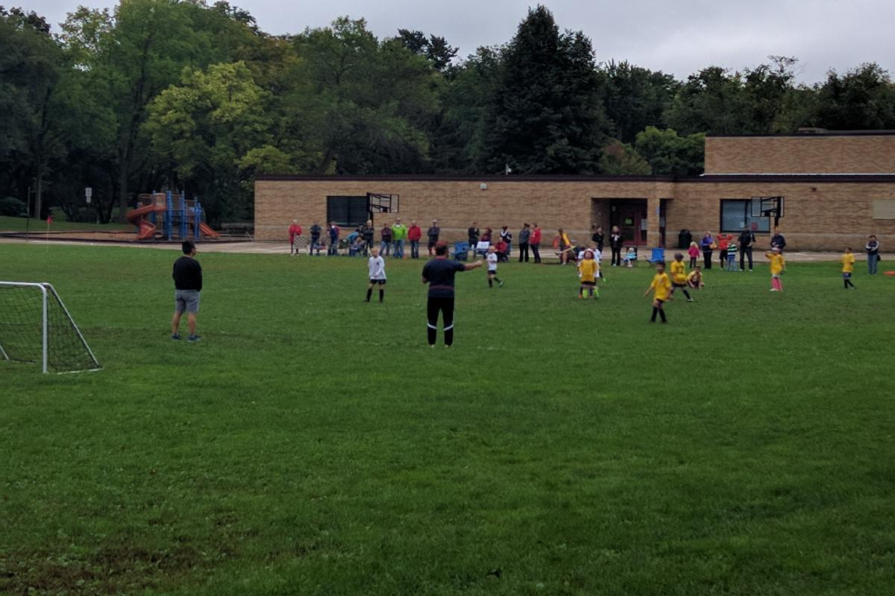
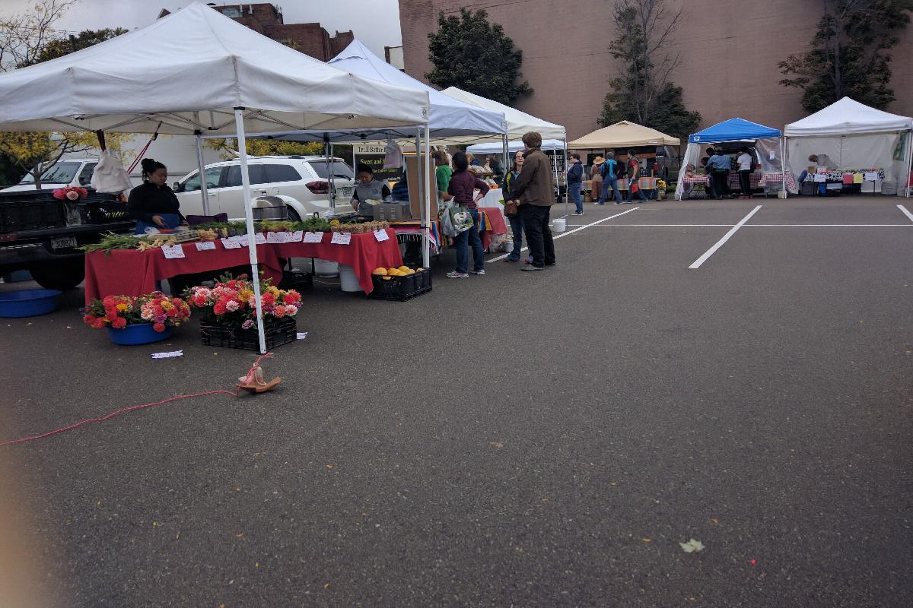
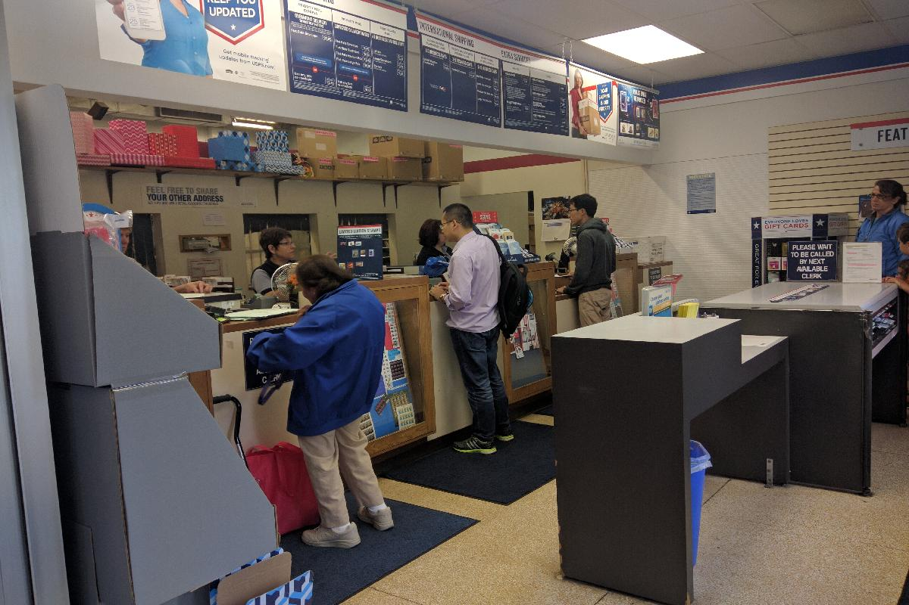
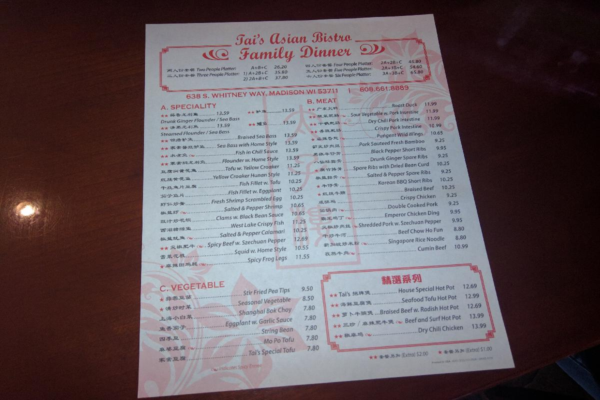
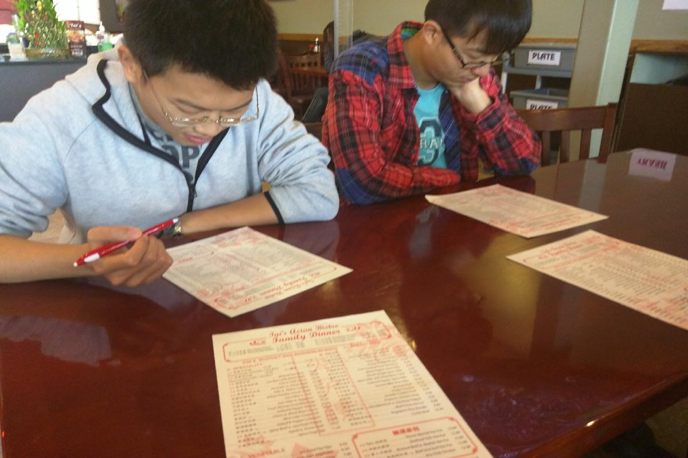
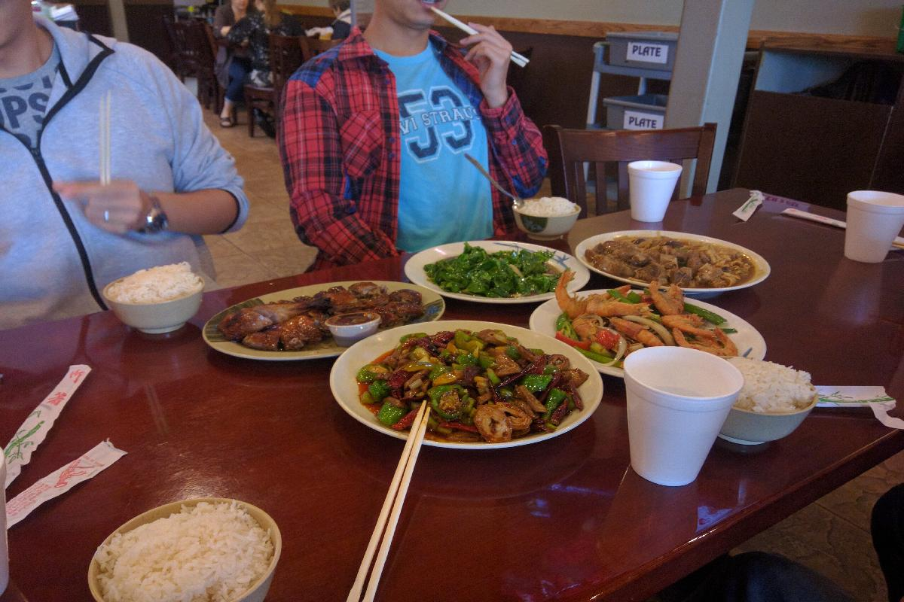
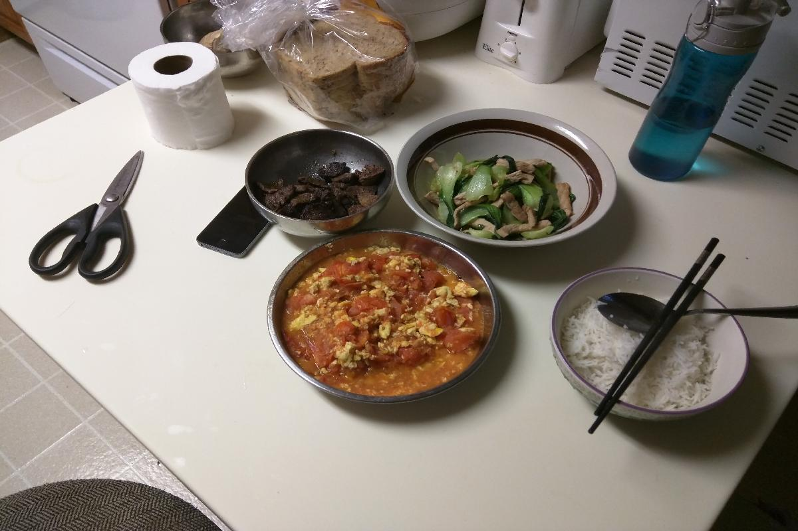

Day 5, Saturday, Oct 01 2016
Bank&Chinese restrant
初来新地方的几天往往都是充实的，因为总有新地方去探索，也总有新事情让你应接不暇。今天是周六，虽然是休息日，但大多数地方还会上半天班，所以也安排了些任务去做。略作如下记录。
Snapshot

- 社区足球场上正在进行儿童足球比赛。
- 上午计划去办银行开户，顺便到邮局给芝加哥领事馆寄报道信，九点左右和同学出发。这次的目的地在城市西边的一片商业区，需要先穿过一片居民区。路上我们经过了一所小学，附近社区包括学校公寓的小孩都在这里上学。今天是周六，操场上正在举行着足球比赛，小家伙们在上面奔跑，家长们在旁边观看，穿制服的裁判在认真执法。一切都很正规，从漂亮的真草皮到孩子们一身完善的装备。联想到在美国足球并非很流行，但大家参与度以致如此，对比下国内各种“足球从娃娃抓起”的口号，是否先能把社区中、学校中的足球活动做好，并规范起来呢？
- 在银行等待客户经理帮我开户。
- 银行是UW Credit Union，大致可以理解为UWM地区的农村信用社。在美国规模比较大的大学基本上都有自己的Credit Union，提供基本的银行服务功能。这是我们找的第二家网点，周六营业到下午两点。进门先在前台登记，然后输入信息等待叫号。然后客户经历直接把我带到一个单间，然后办理业务，也许开户步骤较多，所以进行一对一服务。全程沟通还比较顺畅，客户经理像是个和蔼且职业的德裔中年人。

- 去邮局路上途径露天市场，农夫们出售自己农场采摘的蔬菜，还有人在做各种香气四溢的小吃。
- 办完银行卡我们打开手机地图，直奔邮局。在Target后面我们经过了一片露天市场，每白色的帐篷下是一家摊位，出售着自己农场新鲜采摘的蔬菜，一束束鲜花，小动物，还有现场制作的各式小吃。

- 邮局内景。三个柜台在工作，后面的人在远处排队。
- 邮局的布局和国内基本一样，唯一有特点是他们的排队习惯。无论是饭馆还是银行，或是其他服务性场所，排队的位置总是和柜台保持一定距离，给办理业务的人充分的空间。

- 太子楼中餐馆的菜谱。
- 中午在当地老司机的带领下体验了当地的中餐厅-太子楼。总结味道不错，但有些菜品应该不是现场制作的，类似于快餐。人居花费$15左右，和国内下馆子的花费差不多。

- 小伙伴们在认真点菜。
- 点餐还有点特色。我们点的是5人套餐，2个A类菜，2个B类菜+一个C类菜。

- 菜品上齐，准备开工。
- 五个主菜一次时-啤酒烤鸭，辣炒大肠，辣炒大侠，红烧排骨，小炒西兰花。5个人饕餮一顿，几乎一点不剩。这边中餐馆的结帐也很有意思，直接每个人把信用卡给服务员，店家自动帮你AA制，同时每个人在签名的时候自己写上小费金额，一般是10%左右。

- 晚上和舍友一起做的晚饭。
- 今天的晚饭决定自己动手解决。昨天已经从超市備好了材料，我做了一个西红柿炒鸡蛋，舍友做了小白菜炒肉，蒸好了白米饭，也算是一桌合格的晚餐了。这里讲讲鸡蛋的故事，在超市时买鸡蛋我们发现鸡蛋的价格差得很远，都是12个一打，有的45美分，有的两三刀，有点无从选择，最后还是选的便宜的。回来上网了解到，原来这边食品的标准分的很细，便宜的都是抗生素增长素下的俗称产品，贵的都是生态产品。再吃时顿时感到买的便宜的鸡蛋难以下口，所以下回的目标-2刀的鸡蛋！